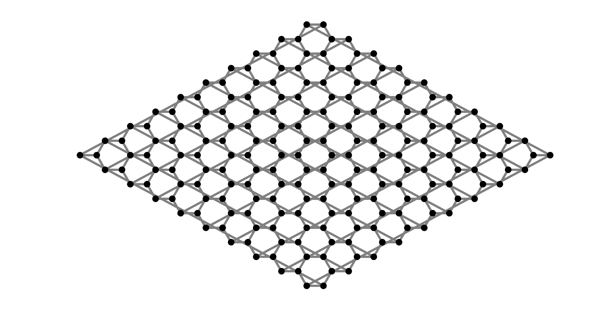

Builder¶
A sample is built using a lattice, a collection of sites, periodic boundary conditions, and a hopping dictionary.
The lattice contains lattice vectors, and site locations within the unit cell. It tells the sample
where a site with a certain coordinate (n0,n1,n2), orbital_index is located in space.
The integer coordinates (n0,n1,n2) give a unit cell location in terms of lattice vectors.
The orbital index gives the location of a site within its unit cell.
A collection of sites is given by a list of coordinates (n0,n1,n2), orbital_index.
This tells the sample which sites you want to include in your model.
The periodic boundary condition function tells the sample how to deal with its edge. It takes coordinates falling outside the sample, and returns coordinates within the sample.
Finally, the hopping dictionary lists the hoppings in the tight-binding system. You can
see it as a collection of hopping matrices from the (0,0,0) unit cell to other unit
cells (n0,n1,n2). The size of these hopping matrices is given by the number of orbitals
in the unit cell. The first index of the hopping matrix corresponds to the orbital in the
origin unit cell (0,0,0), and the second index of the hopping matrix corresponds to the orbital in the
target unit cell (n0,n1,n2).
Lattice¶
A Lattice object contains the geometrical information of a material. It is initiated with a list of 2 or 3 lattice vectors and a list of orbital coordinates. E.g., for graphene:
a = 0.24 # lattice constant in nm
b = a / sqrt(3.) # carbon-carbon distance in nm
vectors = [[1.5 * b, -0.5 * a, 0.],
[1.5 * b, 0.5 * a, 0.]]
orbital_coords = [[-b / 2., 0., 0.],
[b / 2., 0., 0.]]
lat = tipsi.Lattice(vectors, orbital_coords)
If you are working with multiple orbitals per site, each orbital must be listed separately in the second argument. In tipsi, you should always use nanometers as distance unit.
SiteSet¶
A SiteSet object contains sites, that are added by unit cell coordinate and orbital index. E.g., for graphene:
W = 10 # width
H = 10 # height
site_set = tipsi.SiteSet()
for i in range(W):
for j in range(H):
unit_cell_coords = (i, j, 0)
site_set.add_site(unit_cell_coords, 0)
site_set.add_site(unit_cell_coords, 1)
At each unit cell coordinate, we add two sites, generating 10 by 10 unit cells in total.
HopDict¶
A HopDict object contains the electronic information of a material. It is given by a list of hopping matrices corresponding to relative unit cell coordinates. E.g., for graphene:
# graphene example for hop_dict.set((n0,n1,n2), A)
# (n0,n1,n2) gives relative unit cell coordinate
# A[i, j] gives hopping from orbital i in (0,0,0)
# to orbital j in (n1,n2,n3)
t = 2.7 # hopping constant in eV
e = 0.0 # on-site potential in eV
A_0 = [[e, t],
[t, e]]
A_nn0 = [[0., 0.],
[t, 0.]]
A_nn1 = [[0., t],
[0., 0.]]
hop_dict = tipsi.HopDict()
hop_dict.set((0, 0, 0), A_0)
hop_dict.set((1, 0, 0), A_nn0)
hop_dict.set((-1, 0, 0), A_nn1)
hop_dict.set((0, 1, 0), A_nn0)
hop_dict.set((0, -1, 0), A_nn1)
Alternatively, you can set matrix elements individually, using:
t = 2.7 # hopping constant in eV
e = 0.0 # on-site potential in eV
hop_dict = tipsi.HopDict()
hop_dict.empty((0, 0, 0), (2, 2)) # create a 2 by 2 empty hopping matrix
hop_dict.set_element((0, 0, 0), (0, 0), e)
hop_dict.set_element((0, 0, 0), (1, 0), t)
hop_dict.set_element((0, 0, 0), (1, 1), e)
hop_dict.set_element((0, 0, 0), (0, 1), t)
hop_dict.empty((1, 0, 0), (2, 2))
hop_dict.set_element((1, 0, 0), (0, 1), t)
hop_dict.empty((0, 1, 0), (2, 2))
hop_dict.set_element((0, 1, 0), (0, 1), t)
hop_dict.empty((-1, 0, 0), (2, 2))
hop_dict.set_element((-1, 0, 0), (1, 0), t)
hop_dict.empty((0, -1, 0), (2, 2))
hop_dict.set_element((0, -1, 0), (1, 0), t)
In tipsi, you should always use the energy unit electronvolts.
Periodic boundary conditions¶
We need to tell tipsihow to treat the boundary of the sample. Hence, we define a function that takes a site coordinate outside the sample, and returns a coordinate that falls within the sample. E.g., for graphene:
def pbc_func(unit_cell_coords, orbital):
n0, n1, n2 = unit_cell_coords
# PBC are given by n0 modulo W and n1 modulo H
# so that site coordinate n0 = W is mapped to n0 = 0
# and so that site coordinate n0 = W + 1 is mapped to n0 = 1
# etcetera - same for the n1 coordinate
return (n0 % W, n1 % H, n2), orbital
This gives periodic boundary conditions in all directions. Of course, we could also define periodic boundary conditions in only one direction, to create a ribbon sample:
def pbc_func_ribbon(unit_cell_coords, orbital):
n0, n1, n2 = unit_cell_coords
return (n0 % W, n1, n2), orbital
If you don’t specify periodic boundary conditions, tipsi uses closed boundary conditions.
Sample¶
We now have all the ingredients to create a sample. A Sample object
generates the full tight-binding Hamiltonian, given a Lattice, SiteSet,
HopDict, and boundary conditions. Also, keep in mind the Hamiltonian will
have to be rescaled, to fulfill the requirement that all eigenvalues
must be in the range [-1, 1]:
sample = tipsi.Sample(lat, site_set, pbc_func)
sample.add_hop_dict(hop_dict) # apply HopDict
sample.rescale_H(9.) # rescale Hamiltonian
sample.plot() # plot sample
The resulting plot looks like the following image. As you can see, there are hoppings between the outer sites of the sample, indicating that there are periodic boundary conditions in both directions.
Adding disorder¶
We can introduce many types of disorder to our tight-binding model.
Vacancies can be made by deleting a site from the SiteSet, before initializing the Sample object:
site_set.delete_site(unit_cell_coords, orbital)
After adding a HopDict, we can add or change individual hoppings with:
sample.set_hopping(hop, unit_cell_coord0, \
unit_cell_coord1, orbital0, orbital1)
Moreover, tipsi has some convenience functions for common types of global disorder.
We can uniformly strain the Lattice, HopDict pair with (for black phosphorus):
strain = 5 # strain in percent
beta = 4.5 # strain coefficient
strain_tensor = np.diag([-0.002 * strain, \
0.01 * strain, \
-0.002 * strain])
lattice, hop_dict = tipsi.uniform_strain(lattice, \
hop_dict, strain_tensor, beta)
If we have a HopDict with interlayer hoppings, we can create a multilayer sample and add bias by using:
n_layers = 2 # number of layers
bias = 1.0 # bias in eV/nm
n_orbitals = 2 # number of orbitals
# extend unit cell in z-direction
lattice, hop_dict = \
tipsi.extend_unit_cell(lattice, hop_dict, \
2, n_layers)
# add bias
for i in range(n_orbitals * n_layers):
z = lat.site_pos((0, 0, 0), i)[2]
onsite_pot = z * bias
hops.set_element((0, 0, 0), (i, i), onsite_pot)
# remove redundant z-direction hoppings
hops.remove_z_hoppings()
Finally, a magnetic field can be introduced using a Peierls substitution, using units of Tesla, with:
sample.set_magnetic_field(B)
Interface with Wannier90¶
It is easy to create a Lattice, HopDict pair using Wannier90 output files. To this end, we use the function:
lattice, hop_dict = \
read_wannier90(lat_file, coord_file, ham_file[, correct_file])
- Here:
lat_fileis the file containing lattice vectors and atom numbers, usually named *.win.coord_fileis the file containing orbital coordinates, usually named *_centres.xyz. It can be generated by parameterwrite_xyz = truein wannier90 input file.ham_fileis the file containing all the hoppings, usually named *_hr.dat. It can be generated by parameterwrite_hr = truein wannier90 input file.correct_file(optional) correction terms for hoppings, usually named *_wsvec.dat. It can be generated by parameteruse_ws_distance = true(available since wannier90 2.1) in wannier90 input file.
k-space functions¶
To check the Lattice and HopDict objects, we can calculate the band structure that they produce, provided a list of points in k-space:
bands = tipsi.band_structure(hop_dict, lat, kpoints)
for band in bands.swapaxes(0, 1):
plt.plot(kvals, band)
We can also calculate band structures for entire Sample objects, although this is of course not feasible for larger systems:
bands = sample.band_structure(kpoints)